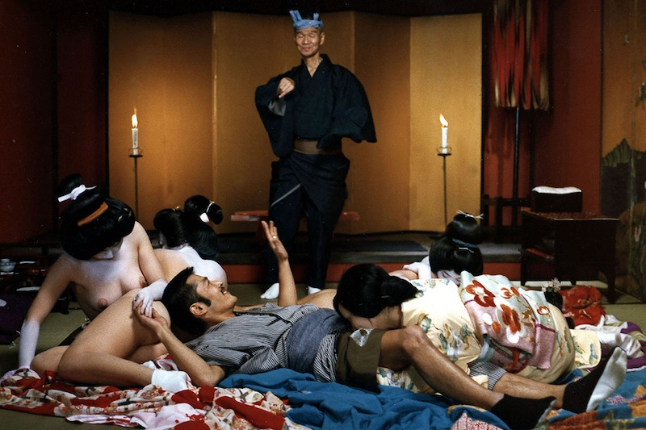
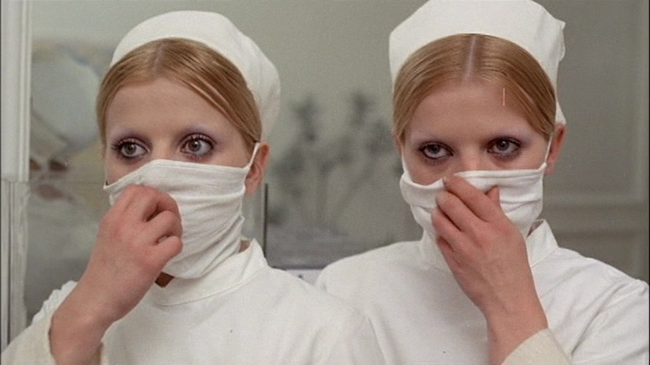
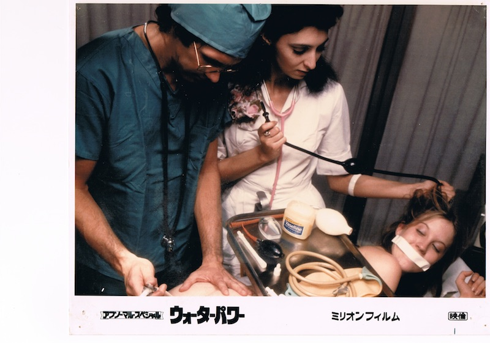

Avant-garde erotic cinemas in the late afternoon
Cinematic experience like a wet-dream in a weekday afternoon
Vampyros Lesbos
1971/West Germany, Spain/89min
Director, writer, music: Jesus Franco
Cast: Soledad Miranda, Ewa Stromberg
The film depicts the ennui passion between a beautiful elite secretary and a female vampire happening in Istanbul. Forget about the story and just give yourself to their beautiful bodies in the splendid location of the Mediterranean Sea and the mood music. The best film to watch in the late afternoon.
L'empire des sens

©Oshima Nagisa Production
1976/Japan, France/109min
Director,writer: Nagisa Oshima
Director of photography; Hideo Ito
Cast: Tatsuya Fuji, Eiko Matsuda, Aoi Nakajima, Meika Seri, Taiji Tonoyama
There has never been a man and a woman ever who loved so intensely. Based on the true story of "Abe Sada", who killed her lover and cut and carried his genital organ. The great master Nagisa Oshima cinematized the hymne a l'amour. The scene of the hardcore sex wasn't able to be developed in Japan, so it was printed in France and imported to Japan.
L'éden et après
1970/France, Czechoslovakia, Tunisia/98min
Director, writer: Alain Robbe-Grillet
Cast: Catherine Jourdan, Pierre Zimmer
French students join a psychological sex experiment by a sketchy Dutch man and stray into a world of delusion and hallucination. Cafe, factory in night, blue sky, set in a village of Tunisia, you see beautiful nude actresses. Directed by Nouveau roman writer Alain Robbe-Grillet.
Les lèvres rouges
1971/Belgium, France, West Germany/100min
Director, writer: Harry Kumel
Cast: Delphine Seyrig
Under the gray sky of Belgium, a couple visits a fortress-like hotel in a wetland. After seeing a secret of the mysterious landlady and her maid, they step into a dark world. A cinematic experience that will cause you to forget time, with great location and beautiful actresses.
Eyes Wide Shut
©1999 Warner Bros. Entertainment Inc. All rights reserved.

1999/USA/159min
Director, writer: Stanley Kubrick
Cast: Tom Cruise, Nicole Kidman, Leelee Sobieski
A physician Tom Cruise becomes obsessed with sexual delusion after his wife Nicole Kidman confesses a secret to him. Tom wanders the town in the night and joins the sexual orgy of a secret society. What is the meaning of life he finds there? Kubrick's last film.
Lèvres de sang

1975/France/87min
Director, writer: Jean Rollin
Cast: Jean-Loup Philippe, Annie Briand
One night a man witnesses a woman he has seen before in an unforgettable childhood dream. And he wanders chasing her through the town. Female vampires at the cemetery, aquarium at night, suburban theater, ruins of an old castle. A cinematic experience like a dream you have seen once.
Water Power:Enema Cut Version

1976/USA/66min
Director: Shaun Costello
Cast: Jamie Gillis, C.J. Laing
"Giving an enema is important responsibility. I'll clean those tramps". An unemployed man filled with indignation attacks girls and give them enemas to purify the filthy New York City. The first place winner of the All Time Best Films of Kanazawa Film Festival (tied with "Big Slide Show"). Shigehiko Hasumi, a former president of University of Tokyo chose this film as one of the best 10 foreign films of the year when released. This year a 6 min-longer version called "Enema Cut Version" will be shown exclusively.